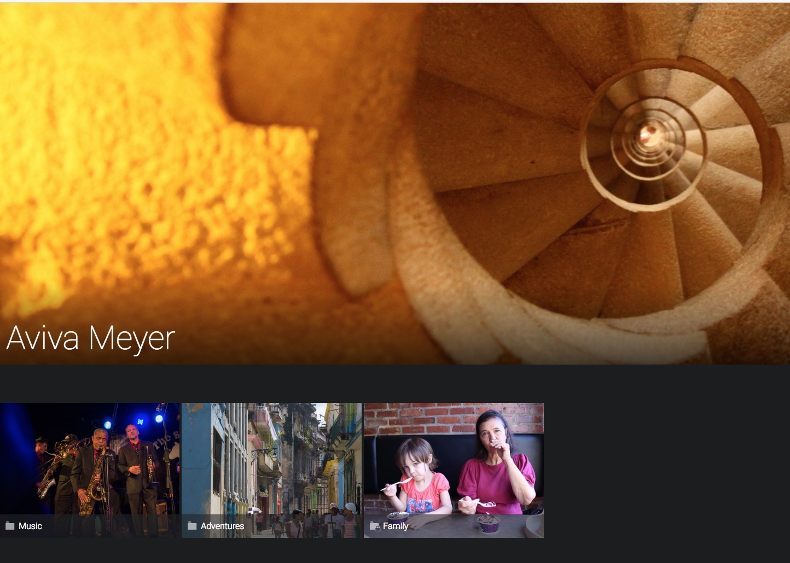

Favorite Sites
The Jeanine Meyer's Academic Activities site displays information on my current and past courses, along with publications and other activities.
The Aviva Meyer's photographs site is a collection of Aviva's photographs stored on a site called smugmug. The categories are Music, Adventures and Family (which requires a password).

Apress publishers is the site for the publishers of this book.